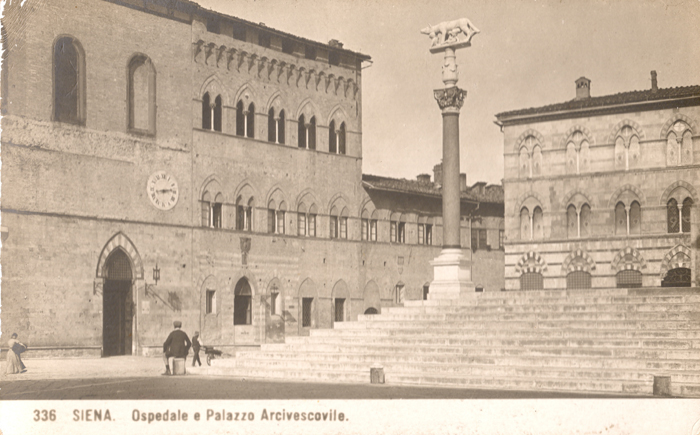

|
1591: modifiche allo Statuto del Santa Maria della Scala

Facciata del Santa Maria della Scala all'inizio del '600
Agostino Marcucci, "Processione in Piazza del Duomo", tela, particolare
|
| |
Il 5 dicembre 1591 inizia la trasformazione della normativa Statutaria del Santa Maria della Scala. Ovviamente anche all’interno dell’ospedale senese, con la caduta della Repubblica nel 1555 e la perdita dell’indipendenza, le cose erano già mutate.
Alla morte del rettore Scipione di Mariano Venturi, avvenuta nel 1562, era stato Cosimo I dei Medici a scegliere come successore Girolamo di Giovanni Biringucci, limitandosi a chiedere un consenso solamente formale all'ente ospedaliero.

(cliccare sulla cartolina per ingrandirla)
Questa nomina, la prima del governo mediceo, segna l’inizio di una radicale modifica nell'organizzazione amministrativa e nella gestione del patrimonio del Santa Maria che, peraltro, si trova ad affrontare una grave crisi finanziaria, tale da dover vendere beni immobili e preziose opere d’arte.
Girolamo Biringucci si rivelò, tuttavia, una scelta azzeccata perché seppe reagire a questo stato di cose e lavorò a fondo e con energia per rimettere in sesto i bilanci ospedalieri.
È, poi, il Granduca Ferdinando I ad emanare e mettere per scritto le varie riforme che aggiornano, e spesso stravolgono, gli statuti trecenteschi dell’ente ospedaliero (il primo statuto è datato 1305). Il granduca stabilisce così che sarebbe spettata solo a lui la designazione del Rettore, nominato a vita, e la scelta dei quattro consiglieri annuali che formavano la Consulta.
Alla Consulta si univano, inoltre, otto savi estratti a sorte per formare il Capitolo.
La Consulta e il Capitolo erano i due organi che presiedevano l’organizzazione e l’andamento dell’istituto.
Gli uffici comunali di Balia competeva la revisione dei libri contabili.
Altre riforme statutarie seguirono l’8 agosto 1593 ed il 23 luglio 1596: in quest’ultima data venne deciso di eliminare gli otto savi estratti a sorte per cui la gestione del Santa Maria della Scala divenne completamente ed esclusivamente di competenza granducale.
|
questa pagina è stata curata da Maura Martellucci e Roberto Cresti

|

 ACCADDE OGGI
ACCADDE OGGI